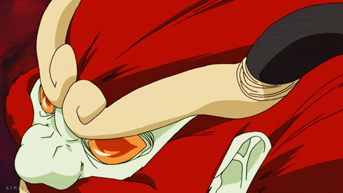
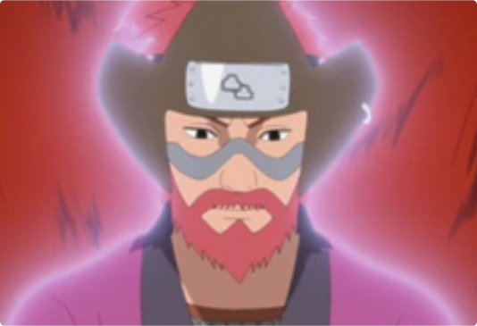

Son Goku
Jinchūriki: RōshiSon Gokū, o Grande Sábio Igualmente Celeste (孫悟空・斉天大聖, Son Gokū: Seitentaisei), mais conhecido como Son Gokū (孫悟空) ou simplesmente Quatro-Caudas (四尾, Yonbi), é uma das nove Bestas com Cauda. No passado, ele foi selado dentro Rōshi de Iwagakure.
 Como seus irmãos, Son Gokū não gostava de Kurama por sua arrogância e crença de que sua força se baseia em seu número de caudas, bem como tinha um grande respeito e admiração para com o Eremita dos Seis Caminhos, com qual tinha uma relação profunda, nunca esquecendo suas palavras finais. Em particular, Son é uma Besta com Cauda muito orgulhosa, pois usa o sufixo "ore" (オレ) quando se refere a si mesmo e detesta ser chamado pelo nome de "Quatro-Caudas" bem como se vangloria de sua linhagem.
Assim como as outras Bestas com Cauda, mas de forma mais intensa, Son Gokū também odiava e detinha grande desconfiança dos seres humanos devido ao fato deles o terem escravizado e quererem apenas seu poder. Sua aversão a humanos fora tal que chegou a afirmar ter grande nojo deles, principalmente por verem as Bestas com Cauda apenas como uma "fonte de poder" e lhes negarem suas existências.
Rōshi não apresentou nenhum tipo de frase que poderia ser marcada.
- Afiliação:Caverna Oculta por Água
- Caudas: Quatro-Caudas
- Classificação: Besta com Cauda
- Família: Hagoromo Ōtsutsuki
- Jinchūriki: Rōshi
- Kekkei Genkai